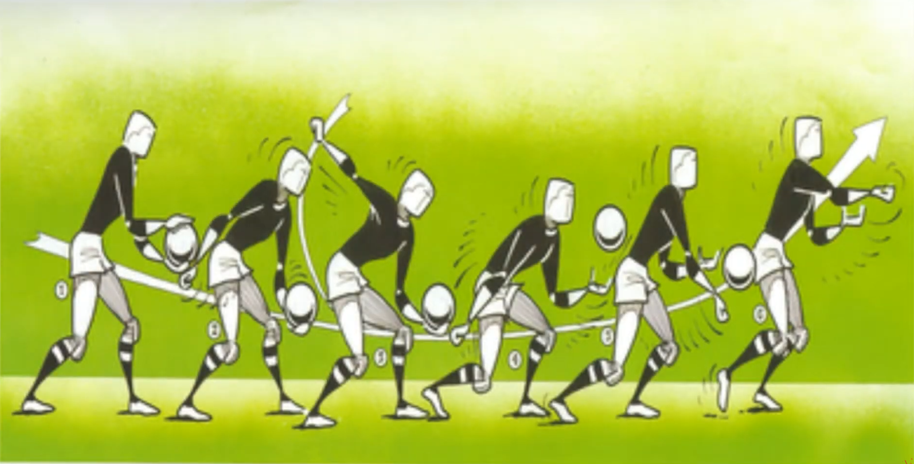
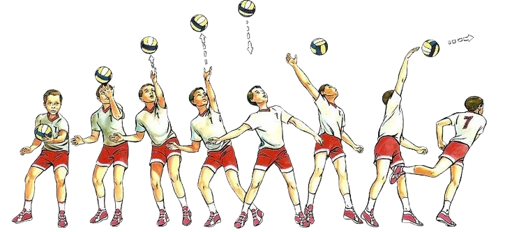
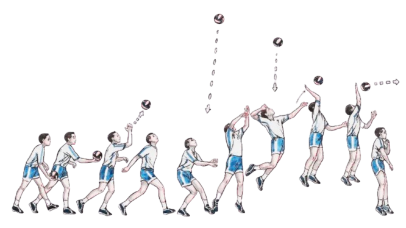
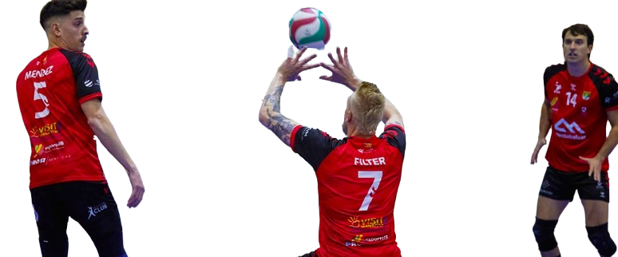
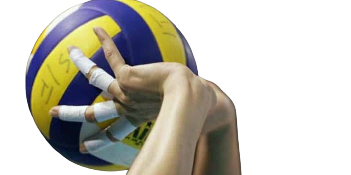

Es importante tener un buen saque para ganar un partido

↑ El saque de abajo:
Es para principiantes y se suele usar cuando no sabes efectuar otro tipo de saque
↑ El saque en potencia:
Es muy util y proboca que al darle un golpe seco con la palma de la mano la pelota se mueva descontroladamente, de forma que esta sea bastante impredecible.
↑ El saque en potencia:
Es muy preciso y consigues darle a la pelota el efecto que desees
↑ El saque con salto:
Es un saque que realizan los profesionales y sirve para pegarle a la pelota con más altura que la red .Una buena recepción significa un buen ataque.

↑ La recepción baja

↑ La recepción alta
Sin una buena recepción el partido esta perdido.

↑ La colocación:
Al central
Por 4
Al opuesto
Por pipe
Al zaguero